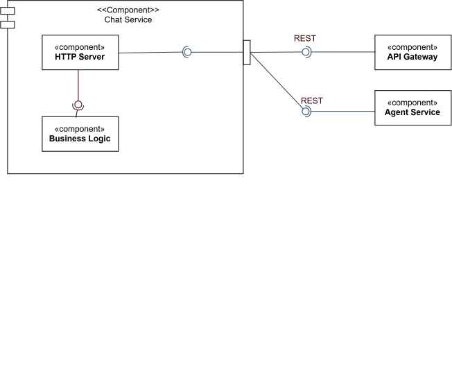

/
CrowdVision · source-available, not open source · © 2026 Nicolò Ghignatti
Bounded context: Knowledge & Assistance (shared with agent) · Stack: Rust / Axum / MongoDB · Code-level walkthrough: Chat Service
The chat owns conversations: it persists message history, enforces per-conversation limits, and forwards each question to agent for an answer. It holds no assistant logic itself — agent is stateless per request and never sees a conversation until chat sends it one.
Ports & Adapters, the same shape as digital-twin and notification, enforced by tests/architecture_fitness.rs. The service has exactly two things outside itself — the conversation store and the agent — so it has exactly two driven ports. domain/ is pure; service/conversations.rs holds the use cases and depends only on ConversationStore and AgentClient; the adapters supply Mongo and the agent’s SSE stream.
graph TD
subgraph "Driving adapter — adapters/driving/http_api"
C["controllers · claims · exceptions\nSSE frame encoding"]
end
subgraph "Service — service/conversations.rs"
UC["use cases: create · list · open · rename · delete · send_message"]
P["ports: ConversationStore · AgentClient"]
end
subgraph "Domain — domain/"
M["conversation · identity · error\nvalidation, history window, titling"]
end
subgraph "Driven adapters — adapters/driven"
MONGO["persistence/conversations.rs"]
AG["agent.rs — SSE client"]
end
C --> UC
UC --> M
UC --> P
P -.->|"implemented by"| MONGO
P -.->|"implemented by"| AG
MONGO --> DB[(chat-db)]
AG -->|"POST /ask stream=true, x-gateway-claims forwarded"| AGENT[agent]
agent answers one question at a time and remembers nothing between calls; chat is what makes a multi-turn conversation possible, by sending back a bounded slice of prior messages with every question.HISTORY_MAX_MESSAGES messages (10 by default) are sent to agent per question — a long conversation doesn’t mean a growing prompt.ownedConversation checks userId and conversationId together on every read, write, and delete; a valid id for someone else’s conversation resolves to “not found,” not “forbidden,” so existence isn’t leaked either.POST /conversations/{id}/messages returns Server-Sent Events — token frames as the answer is generated, then a terminal done frame carrying the saved assistant message. Total generation time is unchanged; time-to-first-token drops from seconds to milliseconds. The edge must not buffer the response (Caddy: flush_interval -1).error frame on a 200.x-gateway-claims header straight through to agent — the same mesh-injected header chat itself trusted, on the same trust chain every other migrated service uses.chat-db; no other service reads it.agent’s /ask for every message, forwarding the caller’s identity — see Communication & Data Flow.For the conversation schema, the citation format, and the API, see the Chat Service internals page.